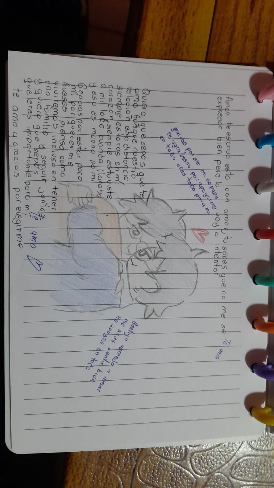

Para ti, amor: Quiero que sepas que en los dias mas dificiles, en los que todo este bien, en las buenas y en las malas ese estare contigo a tu lado. La vida no es facil, existen dias en los que sonries y estas en paz; otros en los que lloras y estas cansado de todo. Yo estare ahi para ti, se que no soy lo mejor en esos casos ya que suelo ser mas radical en desciones y tampoco olvido, pero una vez q estemso tranquilos y pensando bien lograremso una solucion, aunque puede que no sea la mejor, lo lograremos.
Ahora un pequeño homeaje a ese ser que en tus palabras: "Mi Loki lo estraño harto, lo amaba mas que a nada".
Una mascota es una gran compañia, te alegran el dia, te hacen renegar, te dan calma. A veces estan en un momento dificl de nuestras vidas o tienen una esencia muy sentimental, significan mucho. Yo se que extrañas demasiado a tu gato, sea donde este el, tu estaras en sus recuerdos como la primera calidez de amor en su vida. Aunque el no este a tu lado hoy, su recuerdo de su compañia ak igual que duele; tambien es un recuerdo de que estuvo contigo.
Que este dia no este no significa que debas olvidar, por que no hay que olvidar lo bueno de esa compñia y lo que signifcaba tu gato. Porque hay compañeros que dejan de estar a nuestro lado, pero nunca dejan de formar parte de nuestra historia.
Para Loki, el gato que con tanto amor lo extrañas.
✦ ✧ ⋆ ˚｡⋆
Entre tantas estrellas, siempre hay una que destaca. Tu eres una de mis estrellas en mi cielo que brilla mas q todas, mi amor Jair
⋆｡˚ ☾ ˚｡⋆

La carta que me hiciste.